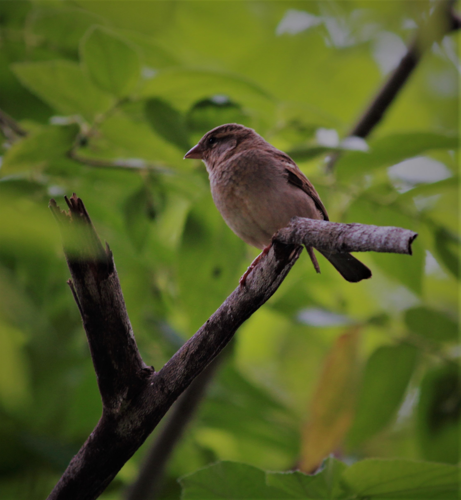
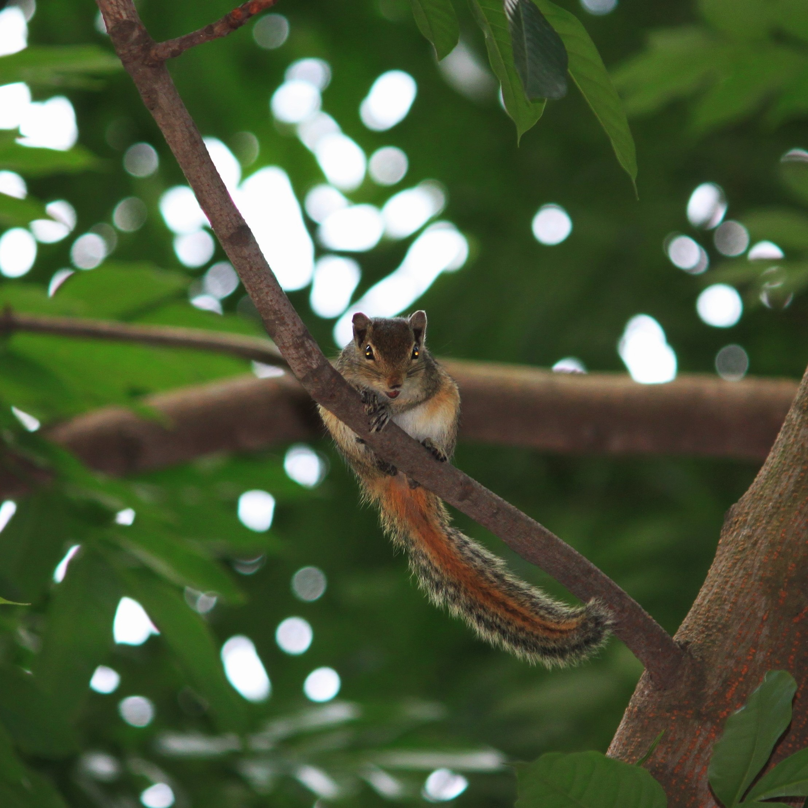

Personal Interests
Leetcode
I enjoy solving leetcode problems in my free time
Sketching
Enjoy sketching animated characters
Watching Movies and Anime
Enjoy watching movies and anime during my free time. I enjoy watching biographies.
Photography
Photography is my creative outlet, allowing me to capture fleeting moments and tell stories through images. I have a deep passion for wildlife photography, focusing on the beauty of nature and the creatures that surround us. Here are some of my favorite shots:


My Equipment
- Camera Body: Canon 500D
- Favorite Lens: 200mm